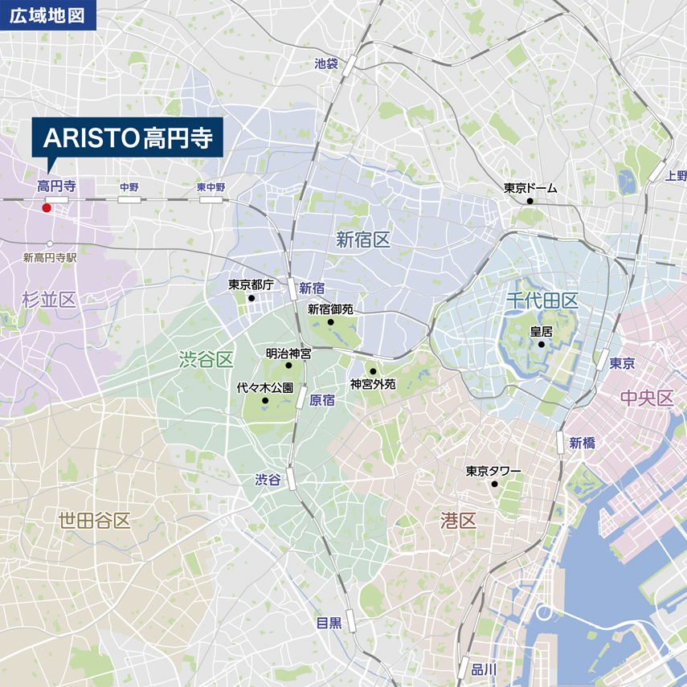
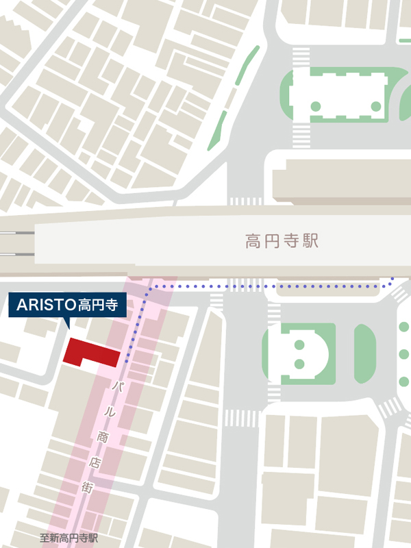
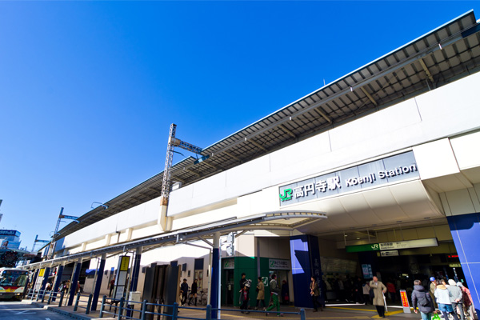

ARISTO は、好立地の優良不動産に対して
少額からの投資が可能な
不動産小口化商品です。
ARISTO(アリスト)は、株式会社エー・ディー・ワークスが提供する、
不動産特定共同事業法に基づく不動産小口化商品です。
ARISTO第3号商品


ロケーション
ARISTO高円寺は、都心5区の新宿区・渋谷区近傍の杉並区に位置します。
『高円寺』は都心近接住宅地を背景に、駅周辺に10の商店街が広がり、
日用品から古着・雑貨等の嗜好品まで幅広い業種の店舗が集積しています。


- ①大場通り商和会
- ②高円寺あづま通り商店会
- ③高円寺庚申通り商店街
- ④高円寺北中通り商栄会
- ⑤丸互高円寺中通商栄会
- ⑥高円寺銀座商店会(純情商店街)
- ⑦高円寺南商店会
- ⑧高円寺駅西商店会
- ⑨エトアール通り商店会
- ※新高円寺通商店街（ルック商店街）
ARISTO高円寺の特性
ARISTO高円寺は、近隣では唯一のアーケード商店街であり、
住民の主要動線となる「パル商店街」に面しております。
加えて、駅徒歩１分の通行量の期待できる商店街入口至近に位置しています。

※青い点線は、高円寺駅からARISTO高円寺までの経路を表しています。


パル商店街は、JR中央線「高円寺駅」から東京メトロ丸の内線「新高円寺駅」方面へ約250m続く商店街であり、100店舗以上が出店する活気のある商店街です。
- 外観
-

 左：商店街側外観 右：裏側外観
左：商店街側外観 右：裏側外観
いずれも2019年12月撮影（竣工時）
資料請求・お問い合わせはこちら
- お電話でのお問い合わせも受け付けております。
- 0120-540-949
-
受付時間 9:00～18:00 （土日祝日除く）
株式会社エー・ディー・ワークス
資産運用事業本部 ウェルスマネジメント部
物件概要
| 物件 |
|
|---|---|
| 所在地 |
|
| 交通 |
|
| 土地 |
|
| 建物 |
|
| 公法上の制限 |
|